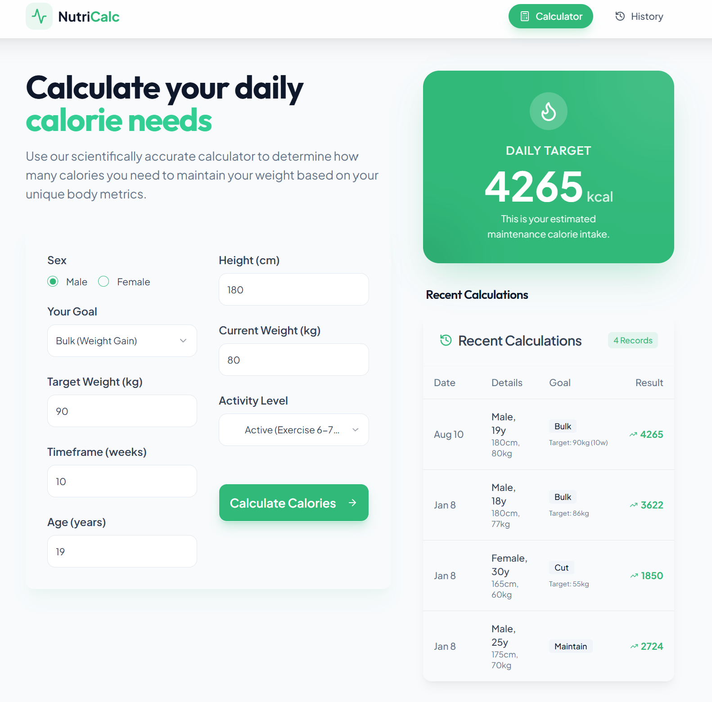
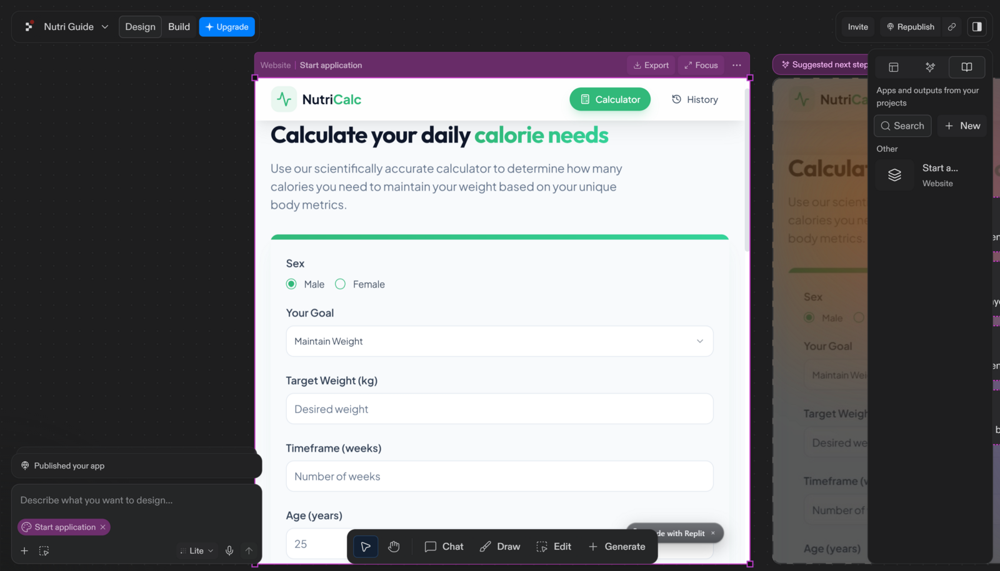

Calorie Tracker App
A web-based nutrition tracker built with Replit and TypeScript
A web app called NutriCalc that turns your body stats and goals into a daily calorie target, instead of just spitting out one number with no context. You put in your sex, height, current weight, goal weight, timeframe, activity level, and age, and it gives you a daily calorie target plus a history of your past calculations, so you can actually see how the number changes as your stats or goals change.
I started building it in Replit and used AI-assisted tools to speed up the first draft: the calculator logic, the layout, and the history view. I didn't just ship what it generated though. I went through the TypeScript code and the interface by hand and fixed issues before they made it into the working app, instead of treating the first AI-generated version as done.
A good chunk of the work was just refining the CSS and layout so it actually felt like a real, finished app instead of something an AI spat out: clean form inputs, a result card that stands out, and a history table that reads like an actual feature instead of a debug log dump.
Honestly, the biggest thing I got out of this project wasn't the calorie math. It was learning where AI tools actually fit into building something. They're good for speeding up a first draft, not a replacement for actually reviewing, testing, and fixing what they give you. Treating the generated code as a starting point instead of a finished product was the real skill I was practicing here.

